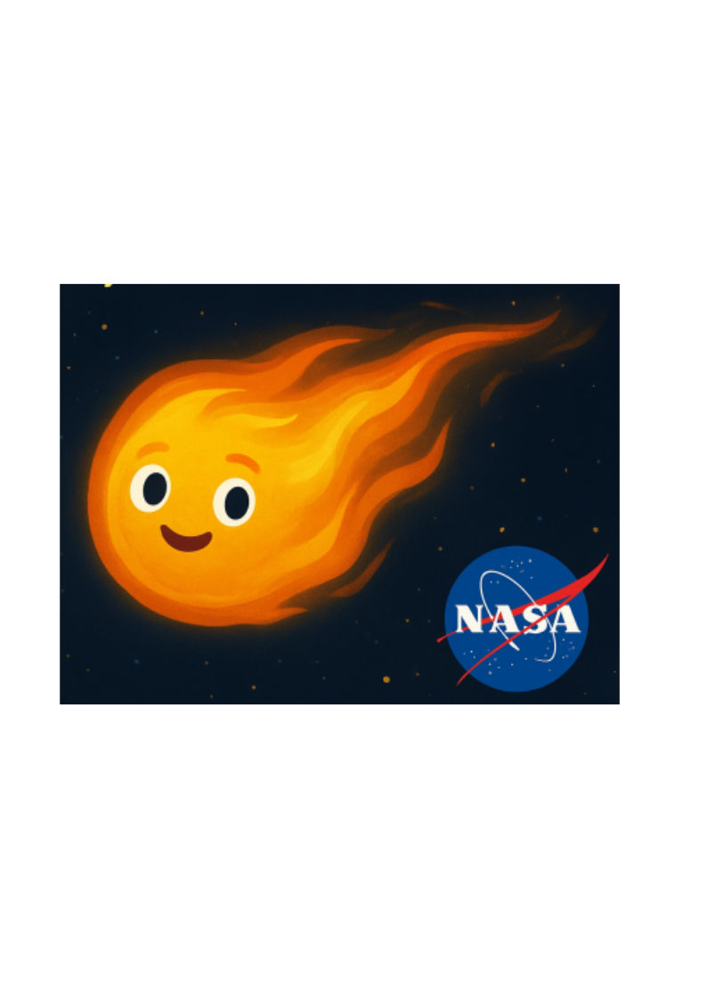

Meet Cora — a curious solar storm
Far away on the Sun, a bright burst of energy pops free — that's Cora, a coronal mass ejection (CME). She is a huge bubble of charged gas and magnetic field hurtling outward from the Sun.
As she travels, she may cause beautiful auroras, but she can also jiggle radios, disturb GPS, stress power grids, and sometimes affect satellites and astronauts.
